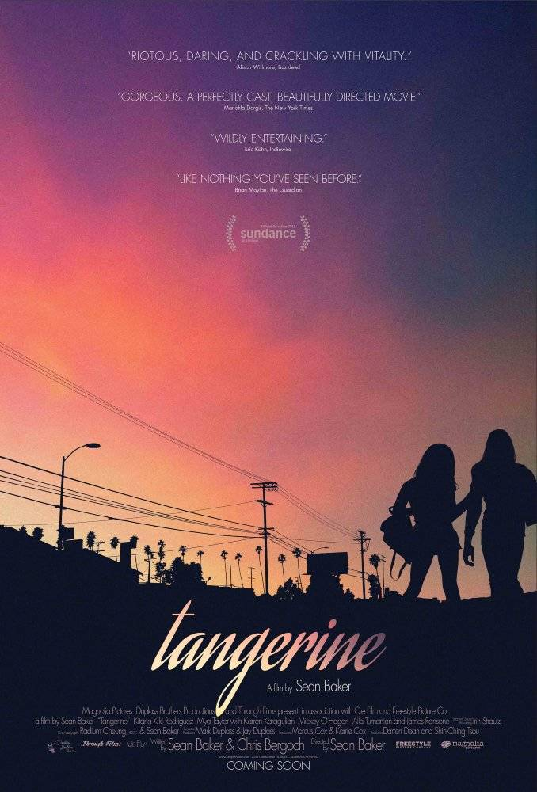

电影推荐 | 橘色 Tangerine

Tangerine 橘色
上映日期:
2015-01-23(圣丹斯电影节) / 2015-07-10(美国)
在美国洛杉矶圣莫妮卡和高地站街（从事性工作）的跨性别的故事。

圣丹斯电影节
专门为独立电影人而设，它旨在鼓励低成本、独立制作的影片。
拍什么样的电影与制作体制有很大的关系。美国社会的多元化，制作资金的多元化，制作技术的多元化使得越来越多的有着电影感觉、受过电影教育的人有可能拍摄自己想拍的东西，而且拍的东西相对容易地找到营销渠道，找到特定的观众群体。
独立电影
“独立电影”的概念来源于上个世纪中期的好莱坞。当时的Hollywood由所谓“八大电影公司”所垄断，一部电影拍摄的运作遵循步骤严谨的“制片人制度”。这种“制片人制度”的目标完全瞄准市场，期望获得最大的利润，因此，尽管这种制度为电影事业带来的大量资金，但也限制了电影创作者的发挥空间。于是，一批电影人摆脱“八大电影公司”的控制，自筹资金，甚至自己编写剧本，自己担任导演，拍出了许多与商业电影截然不同的思想性强的电影，被人们称为“独立电影”。
（摘自百度百科）


导演 Sean Baker
Kitana Kiki Rodriguez，饰演Sin-Dee

Mya Taylor，饰演Alexandra

低成本
本电影是由导演肖恩·贝克用三台iPhone5s、 Filmic Pro（应用）、 Steadicam（摄影稳定器）以及Moondog Lab（变形适配器镜头）拍摄完成。
圣丹斯第一部完全使用iPhone拍摄的电影。
获奖
第25届哥谭独立电影节最佳影片提名、年度突破演员提名（两位女主）、第31届美国独立精神奖最佳影片(提名)、第6届豆瓣电影鑫像奖 鑫豆单元 最容易忽视的好电影(提名)。
真实
剧中的跨性别都是真的跨性别，故事原型在这个街区真实发生过，主演Taylor曾是真的性工作者并且她真的热爱歌唱，片中出现的路人都是真实场景中的人物等。
毒舌

阿兰的闲言碎语
这是几个月前通过杭州酷儿论坛发现的一部电影，然后又过了超过一个月后想起来要去看。并在那时终于看了，但这篇感受却是拖到了年后才写的。（编辑：然后被拖到现在才发。）
在我观影或者说深入了解这个群体前，我其实并不是很深刻明白酷儿论坛对除男同性恋之外的性少数甚至同妻群体和女权等的重视。（貌似我还是通过酷儿论坛的微电影《同根》开始认识到同妻的不幸。我之前思考的方式总是从自身的角度出发，不懂得换位思考。）在接触更多的关于这些的信息之后，我现在的想法是，男同有更多的理由去尊重、理解和支持ta们，我们都是社会桎梏的灾民，基本上都曾或还在因身处边缘而内心挣扎...但因为人数比例问题，ta们比我们更加边缘更加不被人所了解，因此一般而言他们承受着比我们更大的心理负担。而当今腐文化盛行网络，因男同其男色的商业化传播，男同被更多的人了解和认同。甚至有人笃信了，只有同性才是真爱（其实并不是）。但跨性别却常被人们用人妖指代，并常被戏谑的语气所包裹。所以ta们比我们更需要被关注，被了解。
我第一次参与酷儿论坛的活动是戏剧工作坊，那时我第一次听闻《阴道说》。之后的朗读会是较完整地知道了阴道说说的是什么，然后又在别的类似酷儿论坛的组织的公众号的推文中看到ta们也要举办朗读会。因而，《阴道说》成了长时记忆。在前些日子，由于对跨性别这个词的足够敏感，在网络上看到中国跨性别纪录片《有性无别》便点开了。其中一位跨性别话剧演员丝丝对阴道说（的片段）的（对我而言的）震撼演绎又再一次刺激了我脑中的记忆，阴道说又上升到了一个高度。如果您有兴趣，不妨也看看《有性无别》。

哪里可以看
《橘色》
https://pan.baidu.com/share/link?uk=4196050708&shareid=1582054895
《有性无别》中国跨性别纪录片（上）
http://m.youku.com/video/id_XMTkxNDcxNjI5Ng==.html?refer=pc-sns-1&source=
《有性无别》中国跨性别纪录片（下）
http://v.youku.com/v_show/id_XMTkxNDk4MDE1Mg====.html?refer=pc-sns-1&source=